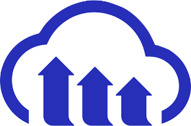
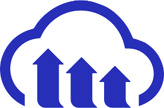

With a total of 188 git commits in 5 days by four people, our marketplace clone tied MVC architecture together to create a fun place to find cool, hip products.
Working As A Team
One week after learning Ruby on Rails, students at Le Wagon split off into groups to work on a marketplace clone with similar features as Airbnb. My group decided to be a champion of doomed and retro products and focus our app to sell all things hipster. Out of our group of four people, I was lead developer picked to be in charge of delegating tasks, doing stand up meetings with TAs, and pushing to production (heroku). Below is the process we used in development, which focused on feature flow, where all team members develop a feature from backend to front end.
- We started with crafting 'User Stories' that laid out our required routes, controllers, and controller methods.
- We created our database schema to illustate the foreign keys and relationships between modals.
- Next we pair programmed to begin the newly created rails app. Together two people created a skeleton of routes, models, and controllers while the other two worked on inspiration for the design and key UI/UX features.
- For the next 3.5 days, we needed an organized way to prioritize features, so we started a kanban board on Trello.
- Next came features. We all created branches, pushing the branch when we were done, and merging back to master. With the website being mostly a simple CRUD application, we worked quickly and managed to present a workable prototype of the website in 2 days at the mid-week demo.
- The last day and a half was spent adding new features (such as a profile page for the user), and relooking at front-end responsiveness.
Specific parts of the website I worked on were:
- The Purchases Controller — The only nested resource routes on the website. When a user wants to purchase a product, she creates a new purchase model that stores the user’s ID and the product ID, which has the information about the seller. That way we are able to link the three together (buyer, seller, and product) in a shared database table and mark items as sold.
- Responsiveness — To make sure the website looked good on any device, I customized the bootstrap media configurations. This was especially important for the Navigation Bar, which initially did not resize well.
- Seeds — I customized 10 seeds for the website, using Cloudinary to upload the images of each.
For front-end we used Figma to build a quick wireframe of CSS components, SASS to connect with and refigure bootstrap variables/colors, and HTML.ERB to add logic to our views. For back-end we coded the app with Ruby on Rails, used PostgreSQL as our database, and used the following gems for quick deployment: Cloudinary to have users upload images of products and their profile avatars; Devise to set up the login/signup views; Geocoder for the maps; and Simple Form for the forms. The revolving card CSS code was found on CodePen and adjusted to our design.
 
